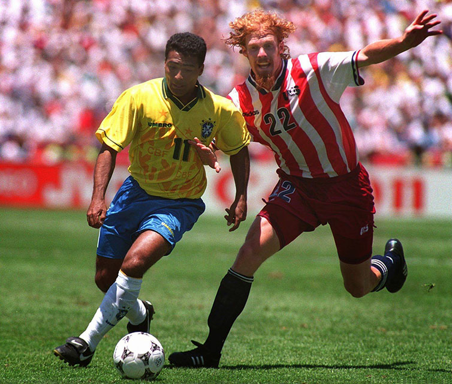

15.ª edición
Mundial con mayor asistencia de la historia
Copa Mundial de la FIFA Estados Unidos 1994
17 de junio – 17 de julio de 1994
País sede: Estados Unidos 🇺🇸
24 selecciones
52 partidos
Datos generales del torneo
- País sede: Estados Unidos 🇺🇸
- Ciudades sede: Pasadena, San Francisco, Chicago, Dallas, Orlando, Detroit, Boston, Nueva York
- Estadios: 9 recintos (incluye Rose Bowl y Giants Stadium)
- Selecciones participantes: 24
- Partidos jugados: 52
- Goles anotados: 141
- Campeón: Brasil 🇧🇷
- Subcampeón: Italia 🇮🇹
- Tercer lugar: Suecia 🇸🇪
- Cuarto lugar: Bulgaria 🇧🇬
- Máximo goleador (Bota de Oro): Hristo Stoichkov & Oleg Salenko (6 goles)
- Mejor jugador (Balón de Oro): Romário (Brasil)
- Mejor portero: Michel Preud’homme
- Premio Fair Play: Brasil 🇧🇷
Jugadas y momentos destacados
El Mundial 1994 dejó momentos icónicos: la magia de Romário, la sorpresiva Bulgaria semifinalista,
el récord de Oleg Salenko y la dramática final decidida en penales.

Resumen del torneo
- Brasil ganó su cuarto título mundial, convirtiéndose en la selección más laureada de la historia.
- Italia llegó a la final gracias a la actuación de Roberto Baggio, quien anotó goles decisivos en duelos clave.
- El campeonato registró la mayor asistencia total en la historia de los Mundiales (3.5 millones de espectadores).
- Suecia sorprendió al mundo con un tercer lugar histórico, goleando 4–0 a Bulgaria.
- El torneo estuvo marcado por la muerte del defensa colombiano Andrés Escobar, una tragedia mundialmente lamentada.
- Por primera vez, una final de Copa del Mundo se decidió por penales.
Fase final (últimos 4)
Semifinales
- 🇧🇷 Brasil 1–0 Suecia 🇸🇪
- 🇮🇹 Italia 2–1 Bulgaria 🇧🇬
Tercer lugar
- 🇸🇪 Suecia 4–0 Bulgaria 🇧🇬
Final
- 🇧🇷 Brasil 0–0 🇮🇹 Italia
Brasil gana 3–2 en penales
Selecciones participantes por grupo
Grupo A
- 🇺🇸 Estados Unidos
- 🇨🇭 Suiza
- 🇨🇴 Colombia
- 🇷🇴 Rumania
Grupo B
- 🇧🇷 Brasil
- 🇷🇺 Rusia
- 🇨🇲 Camerún
- 🇸🇪 Suecia
Grupo C
- 🇩🇪 Alemania
- 🇪🇸 España
- 🇰🇷 Corea del Sur
- 🇧🇴 Bolivia
Grupo D
- 🇦🇷 Argentina
- 🇳🇬 Nigeria
- 🇧🇬 Bulgaria
- 🇬🇷 Grecia
Grupo E
- 🇮🇹 Italia
- 🇲🇽 México
- 🇮🇪 Irlanda
- 🇳🇴 Noruega
Grupo F
- 🏴 Inglaterra
- 🇳🇱 Países Bajos
- 🇸🇦 Arabia Saudita
- 🇲🇦 Marruecos
Final: Brasil vs Italia
La final se disputó el 17 de julio de 1994 en el Rose Bowl (Pasadena), con más de 94 000 espectadores.
Tras un 0–0 muy táctico, la definición por penales dio a Brasil su cuarto título mundial.
El momento más recordado fue el penal fallado por Roberto Baggio.
Brasil 🇧🇷 – Alineación titular
- DT: Carlos Alberto Parreira
- Taffarel (POR)
- Jorginho
- Aldair
- Márcio Santos
- Branco
- Dunga (C)
- Mauro Silva
- Zinho
- Bebeto
- Romário
- Raí
Italia 🇮🇹 – Alineación titular
- DT: Arrigo Sacchi
- Pagliuca (POR)
- Baresi (C)
- Maldini
- Costacurta
- Benarrivo
- Albertini
- Dino Baggio
- Donadoni
- Signori
- Roberto Baggio
- Massaro
Reseña general
La Copa Mundial de Estados Unidos 1994 fue un torneo vibrante y récord en asistencia.
Popularizó el fútbol en el país norteamericano e incluyó algunas de las historias más icónicas del deporte.
El campeonato destacó por la brillantez de Romário, las sorpresas de Bulgaria y Suecia, y el dramatismo de la final.
Fue también uno de los eventos deportivos más mediáticos de la década de 1990.